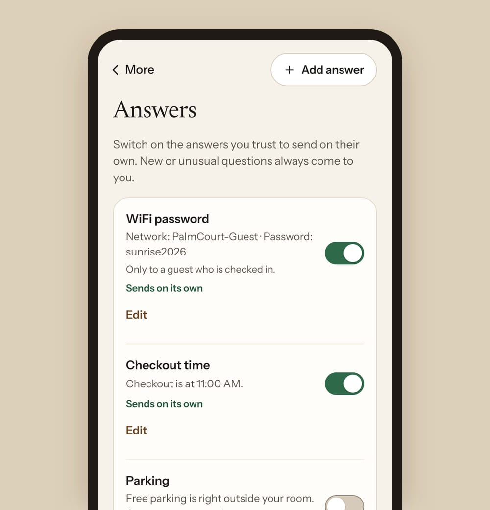
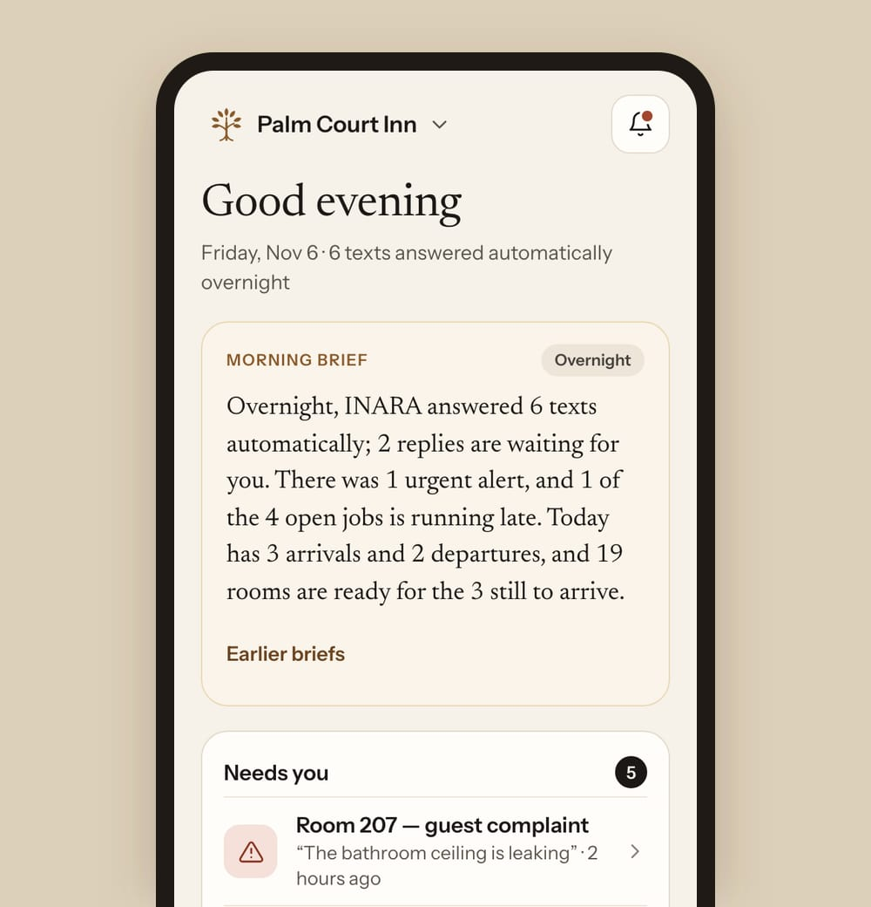
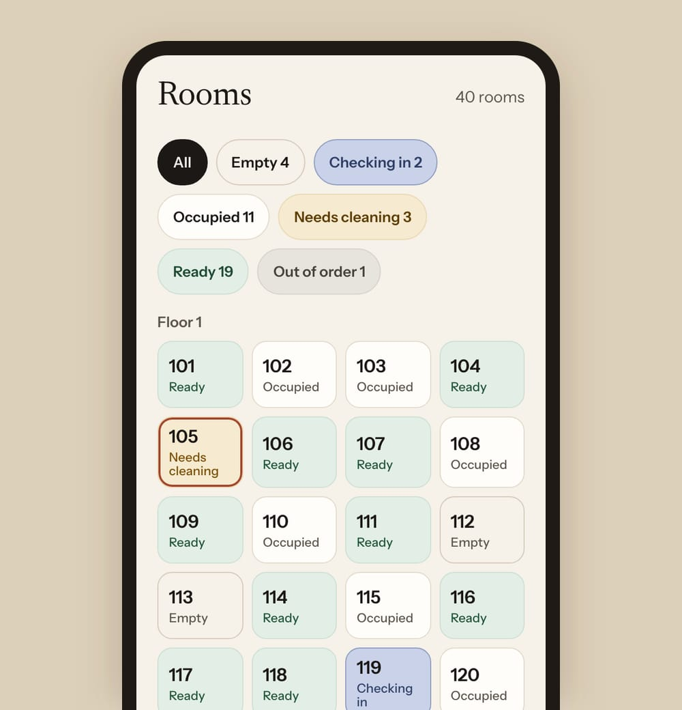
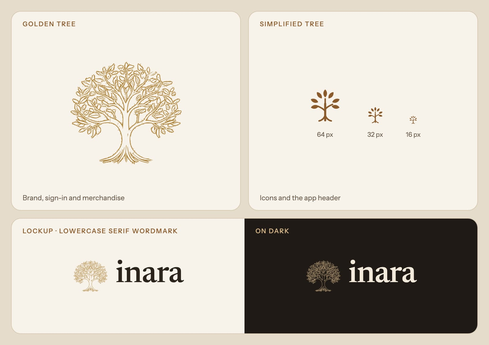
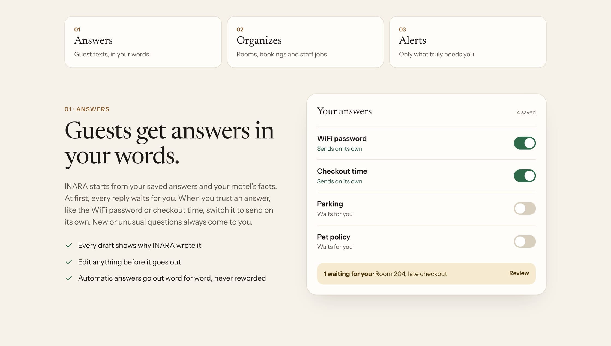
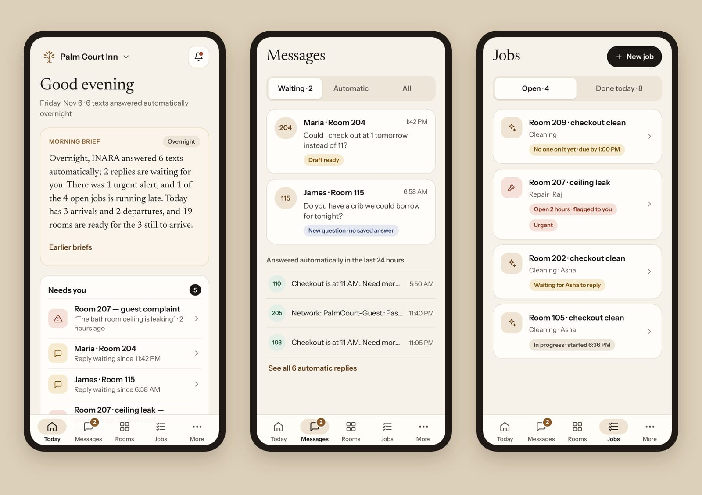

INARA: your motel, quietly looked after
An AI operations assistant for independent, family-run motels. It answers guest texts in the owner's words, keeps every room's status current, sends cleaning and repair jobs to staff, and only bothers the owner with what truly needs them.
![The inarahq.com home page at 1440 pixels wide. Left: a tag reading For independent, family-run motels, the headline Your motel, quietly looked after, a line saying INARA answers guest texts in your words, keeps every room's status current and sends jobs to your staff, and an Apply for the free pilot button. Right: a phone titled Guest texts for Palm Court Inn, where a WiFi question was answered automatically and a late-checkout request got INARA's draft with its reason, then was approved and sent at 7:00 AM.](../../assets/inara-site-hero.webp)
The problem
At an independent motel, the owner is the front desk. A guest texts about the WiFi at 11 PM, a late-checkout request arrives at midnight, a housekeeper needs to know which room to clean next, and a leak can start at 2 AM. Many owners run several properties and are often away, sometimes in another time zone.
Their tools are a booking system, a phone and memory. Big hotel software is built for chains, not for a family running 40 rooms.
What I heard
An owner told me about a guest-request and housekeeping tool his motel tried a few years ago. It sat on top of their booking system instead of connecting to it, so the rooms in the tool and the rooms in the booking system never matched. The staff stopped trusting it, and then stopped using it.
That one story became a rule: INARA reads from the booking system and never changes it. The booking system stays the source of truth for bookings; INARA owns cleaning and repairs.
Design principles
- Principle 01 Approve everything at first, automate what you trust. Nothing reaches a guest until the owner says so, one answer at a time.
- Principle 02 Show the reason. Every draft says why INARA wrote it.
- Principle 03 Read-only on other systems. INARA never edits the booking system.
- Principle 04 Only bother the owner with what needs them. Routine questions wait for the morning; urgent ones don't.
Inside the owner app

The trust model
Drafts with a reason. For a late-checkout request, INARA drafts "We've noted your request for a 1 PM checkout. The front desk will confirm in the morning." and adds: Why: checkout changes need your OK, so this promises nothing yet.
Two taps to send. Approve turns into "Tap again to send" for three seconds. A text can't be taken back, so a single mis-tap never sends.
"Sent" means sent. The confirmation only shows once the text really went.

The owner chooses what runs on its own
Each saved answer (WiFi, checkout time, parking) has a switch: "Sends on its own" or "Waits for you". Automatic answers go out word for word, never reworded. New or unusual questions always come to the owner.
One safety checkpoint. Every outgoing text must match an approved reply, an enabled answer or a required STOP/HELP reply, and an automated test fails if any new code path could text a guest.

The Morning Brief
At 7 AM the owner gets the night in one paragraph: "Overnight, INARA answered 6 texts automatically; 2 replies are waiting for you. There was 1 urgent alert, and 1 of the 4 open jobs is running late…"
The counts are computed in code; the AI only writes the sentences. If the text contains a number that isn't in the facts, or the AI fails, a plain template is used instead. A summary an owner can't trust is worse than none.

Rooms and jobs
Six room states, on purpose. "Empty" is not "Ready": a room nobody has checked must never look sellable.
Staff need no app. Housekeepers get a text and reply DONE when the room is finished; the room flips to Ready.
Slow jobs are flagged, so the owner hears about the leak still open after two hours, not every routine clean.
Designing consent
Texting guests and staff is regulated, and carriers review every program. Their rules shaped the product:
- A front-desk sign tells guests how to text and what they agree to.
- The front desk ticks an unticked "Guest agreed to get texts about their stay" box before any welcome or checkout text.
- Staff get one invitation only after the owner records that they agreed, and no job texts until they reply YES.
A pre-launch review of my own website found it promised more than the product did ("one switch stops all texts", "approve everything at first"). I changed 22 pieces of copy so every claim matches the code, and added tests that stop the false claims coming back.

Brand and design system
- A golden tree for the brand, the sign-in and merchandise, and a simplified tree that stays sharp at 16 pixels for icons and the app header.
- A lowercase serif wordmark, "inara", warm and readable like a name.
- Tokens for color, type and spacing, shared by the website, the owner app and the internal staff area.
- Calm motion: quick, transform-only transitions; everything still for people who turn motion off.
Before and after
The first website explained features twice and hid its FAQ answers. The redesign follows one promise and three ideas (Answers · Organizes · Alerts), each proven by a moving product card. The owner app moved from crowded screens to a consistent 20px grid, one main action per screen, 16–17px text and 44px tap targets.


Building it
I designed in Claude Design and built in React and TypeScript with Claude Code as my coding partner. I reviewed every change, wrote the requirements, and checked the work on a real phone.
The owner app scores 100 on Lighthouse accessibility, installs to the home screen like a native app, and runs on demo data in every preview so it can be shown safely.
What I'll measure in the pilot
- Time from a guest's text to a reply
- Share of texts answered automatically, and how that grows as the owner switches answers on
- Owner taps per day
- Cleaning and repair jobs finished on time
- Nights the owner wasn't woken for something that could wait
What I learned
- Trust is a product feature.Every "why", every confirmation and every honest label is part of the design.
- One owner's story can set the architecture.The read-only rule came from a single conversation.
- Write the copy last, and check it against the product.Marketing that overpromises breaks the trust the product earns.
Where it stands. Live at inarahq.com and preparing a first pilot with a 40-room San Francisco motel. Every screen on this page comes from the owner app's demo data, for a fictional motel.